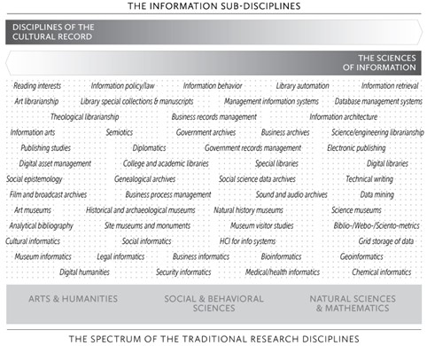
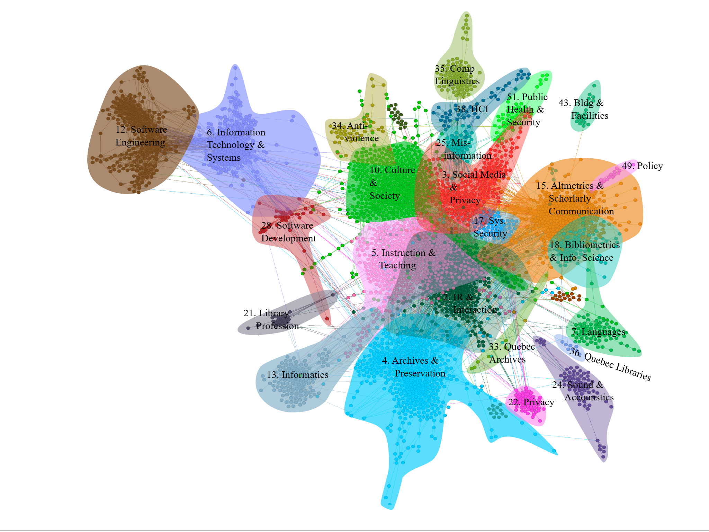

Information in Society - Week 1
Welcome
Can you name this movie?

Information is…
- Everything
- Everywhere
- All at Once
I say information you say…
Purpose of the course
To see the world (and make it better) through an information lens.
Structure of the course
- Conceptual foundations (weeks 1-3).
- Information and individuals (weeks 4-5)
- Information in organizations (week 5)
- Information in society (weeks 6-10)
Some rules
- Be open, kind, and respectful
- There are no stupid comments or questions
- The professor is not always right
- Trust yourself
- Go at your own pace
- Have fun!
The information field
Information sub-disciplines
A much nicer view (LIS in Canada)
Professional values of the information field
- Stewardship
Gathering, organizing, and preserving information for future use. - Service
Being of service to our users, colleagues, and communities. - Intellectual freedom
Protecting the right of people to hold, share and access ideas without restrictions. - Equity, diversity, and inclusion
Ensuring that all individuals and groups have access to information, can participate in the production of information, and be adequately represented in information. - Privacy
protecting the privacy of individuals and activities. - Literacy and learning
Promoting reading and lifelong learning. - Democracy
Supporting democracy and democratic principles. - Social responsibility
Working to make the world a better place.
Live survey
Results
Assignments
| Assignment | Due date | Weight |
|---|---|---|
| Participation self-assessment - Part 1 | Friday, September 26, 2025 | 7.5% |
| Analysis of an information setting | Friday, October 17, 2025 | 30% |
| Participation self-assessment - Part 2 | Friday, October 28, 2025 | 5% |
| Essay plan | Friday, October 28, 2025 | 10% |
| Essay | Friday, December 12, 2025 | 40% |
| Participation self-assessment - Part 3 | Friday, December 12, 2025 | 7.5% |
Analysis of an information setting
Instructions
Choose a physical, virtual, or hybrid setting where information phenomena are occurring. You can be creative and choose a setting where information is not the first thing that comes to mind (e.g., an emergency room or a game of Monopoly). It can also be a personal space (e.g., your kitchen or home office). Avoid choosing a setting that is too large to be fully observed (e.g., Dalhousie University in Halifax or the internet).
Submit
An approximately 1,500-word text including:
- A brief description of the setting.
- The type(s) of data/information/knowledge are at play in the setting.
- The function(s) of information in the setting.
- The interactions between people and information in the setting.
- The factors that facilitate or hinder the information processes (e.g., use, access, exchange, etc.) in the setting.
- The impact of technologies on the setting.
- The implications/opportunities for information professionals.
How many hours will that take?
Essay plan
Instructions
Choose an essay topic, think about how it relates to the Information in Society course, and produce an annotated bibliography with five relevant references for your essay.
To submit
A single document containing:
- A tentative title for your essay
- A short explanation of the topic’s relevance for the course (250 words).
- A summary of five sources with a justification of their relevance for your essay (250 to 500 words per source).
How many hours will that take?
Essay
Write an expository or argumentative essay of about 4,000 words on a topic of your choice that relates to the course. I recommend using the following structure for your essay:
- Introduction
- Background/context
- Objective(s) of the essay
- A brief outline of the essay
- Body
- Include an adequately titled subsection for each key point of your essay.
- Conclusion
- Summary of key points
- General conclusion
- Broader implication or future action
How many hours will that take?
Your answers
Doing the math
3-credit course
9hrs/week = 3hrs/week of class time + 6hrs/week for the rest.
This semester
9 hours x 12 10 weeks = 90 hours.
This course
Class time = 30 hours
Class prep ~ 10 hours
Participation self-assessment ~ 1 hours
Assignment #1 - Information Setting ~ 10 hours
Assignment #2 - Essay plan ~ 10 hours
Assignment #3 - Essay ~ 29 hours
Total ~ 90 hours
Attend this event!
https://www.eventbrite.ca/e/dliaa-outstanding-alumni-award-presentation-2025-tickets-1656851931729
See you in two weeks!
No class next week….